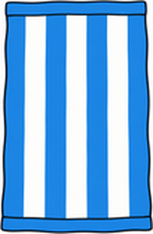
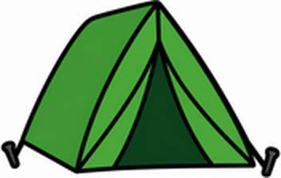

Unit 1 The Great Outdoors — 第一回｜出遊計畫 Going To
班級：______ 座號：____ 姓名：__________ 分數：______ / 100一、聽力測驗
老師會播放每題的錄音，請仔細聽，選出正確答案。
1. What does the speaker have?
(A) a bat and a mitt (B) a tennis racket and a ball (C) a skateboard and a helmet (D) a fishing rod and a bucket
2. What is B going to do?
(A) do homework (B) eat pizza (C) play baseball (D) play tennis
3. What does B think?
(A) It will rain. (B) It's going to snow. (C) B doesn't know, and hopes it won't rain. (D) It will be hot.
4. Where is she going?
(A) the mountains (B) the beach (C) the circus (D) the park
5. How's the weather going to be?
(A) cool (B) foggy (C) hot (D) cold
二、是非題
閱讀短文，判斷句子是 True（對）或 False（錯）。
Tom is going to go camping tomorrow. He's really excited. He has a tent and a sleeping bag, but he doesn't have a flashlight. The weather is going to be cool. It isn't going to rain.
6. Tom is going to go fishing tomorrow. （ T ／ F ）
7. Tom has a tent. （ T ／ F ）
8. Tom has a flashlight. （ T ／ F ）
9. The weather is going to be cool. （ T ／ F ）
10. It's going to rain tomorrow. （ T ／ F ）
三、選擇題
選出最適合的答案。
11. I'm going to go ____. I have a skateboard.
(A) to skateboarding (B) skateboarding (C) skateboard (D) play skateboard
12. You need a ____ to play tennis.
(A) flashlight (B) fishing rod (C) tennis racket (D) bucket
13. A: How's the weather going to be? B: It's going to be ____.
(A) cold (B) a hat (C) Yes, it is. (D) skateboarding
14. We're going to go camping tomorrow. I'm really ____!
(A) excited (B) cool (C) warm (D) hot
15. A: Is it going to rain? B: ____
(A) I'm not sure. (B) I'm going to go fishing. (C) It's a bucket. (D) He needs a hat.
16. What is this? 這是什麼？

(A) a swimsuit (B) a towel (C) a tent (D) a hat
17. What is this? 這是什麼？

(A) a helmet (B) a bucket (C) a towel (D) a tent
四、文法測驗
選出文法正確的答案。
18. She ____ going to play tennis today.
(A) are (B) am (C) be (D) is
19. What does she ____? She needs a hat.
(A) needs (B) to need (C) need (D) needing
20. They ____ helmets.
(A) need (B) is need (C) needs (D) needing
21. I'm not going ____ study with Sue.
(A) at (B) in (C) to (D) for
22. ____ he need an umbrella?
(A) Are (B) Does (C) Is (D) Do
五、配合題
左邊的題目要配右邊哪一個？用下拉選單選出代號。
(A) She needs a hat.
(B) I hope not.
(C) I'm going to go skateboarding.
(D) It's going to be hot.
(E) No, he doesn't.
23. What are you going to do? （ ）
24. What does she need? （ ）
25. How's the weather going to be? （ ）
26. Is it going to rain? （ ）
27. Does he need an umbrella? （ ）
六、句子改寫
依照提示改寫句子，直接輸入完整句子（注意大小寫與標點可忽略）。
28. （改成否定句）I'm going to play tennis with you.
29. （改成疑問句）He is going to play tennis with May today.
30. （主詞改成 He）I have a bat and a mitt.
31. （主詞改成 They，a hat 改成複數）She needs a hat.
32. （改成否定句）He needs an umbrella.
七、句子重組
依序點選單字，排成正確的句子。
33. I'm ／ going ／ skateboarding. ／ go ／ to
34. How's ／ to ／ going ／ the ／ weather ／ be?
35. hat. ／ a ／ She ／ needs
36. with ／ you. ／ tennis ／ play ／ to ／ not ／ I'm ／ going
37. going ／ with ／ tennis ／ Are ／ you ／ today? ／ play ／ to ／ me